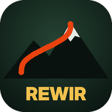

Polityka prywatności
1. Kto odpowiada za aplikację
Aplikację Rewir tworzy i udostępnia jej autor jako osoba prywatna. Kontakt w sprawach prywatności: [wpisz tu swój adres e-mail].
2. Jakie dane gra przetwarza
- Lokalizacja GPS – do rysowania pozycji na mapie, pomiaru czasu zjazdów, nagrywania tras i mechanik gry (np. budowanie bazy, zwiad). Gra prosi o zgodę przeglądarki i możesz ją w każdej chwili cofnąć w ustawieniach telefonu.
- Twoje przejazdy, trasy, rekordy i stan gry – zapisywane w pamięci przeglądarki na telefonie (localStorage i IndexedDB).
- Imię lub ksywka – tylko jeśli je wpiszesz, żeby podpisać wyzwanie wysyłane znajomemu.
- Kontakt alarmowy – tylko jeśli go wpiszesz w funkcji udostępniania pozycji; zostaje w telefonie.
- Gra online (tylko jeśli dołączysz) – ksywka, ikonka, losowy identyfikator gracza i skrót (hash) Twojego kodu odzyskiwania; trasy, które sam dodasz do rankingu online (przebieg, nazwa, długość, spadek) – widzą je inni gracze; czasy, prędkości i daty przejazdów na tych trasach – widoczne w rankingach razem z ksywką; zawody online, które założysz lub do których dołączysz. Twoje pozostałe przejazdy, lokalizacja na żywo i baza nie są wysyłane.
- Grupy i wspólne zjazdy (tylko jeśli dołączysz do grupy) – nazwa grupy, termin i miejsce zbiórki, lista uczestników z odpowiedziami „jadę / może / nie jadę”, wyniki wspólnych zjazdów. W czasie spotkania (od godziny przed zbiórką do 5 godzin po niej) Twoja bieżąca pozycja jest wysyłana co ok. 15 sekund i widzą ją tylko członkowie tej grupy; po tym czasie przestaje być pokazywana. Jeśli nie odpowiesz na pytanie „Wszystko OK?”, grupa dostaje alarm z Twoją ostatnią pozycją.
- Wioska na mapie (tylko jeśli włączysz „Pokaż moją wioskę innym”) – przybliżone położenie bazy (przesunięte w obrębie kratki ok. 1 km, dokładne położenie nie opuszcza telefonu), poziom, liczba pól, fala i stan muru. Widzą je inni gracze online w okolicy. Wyłączenie przełącznika usuwa wioskę z serwera.
- Nazwa i położenie wioski dla znajomych (gdy grasz online) – nazwa wioski, dokładne położenie bazy i jej stan (poziom, pola, fala, mur). Widzą je wyłącznie osoby, które dodałeś do znajomych; usunięcie znajomego lub zablokowanie gracza odbiera mu ten dostęp.
- Znajomi i czat (tylko jeśli z nich korzystasz) – lista Twoich znajomych, czas ostatniej aktywności w grze (status „w grze teraz”), treść wiadomości czatu (ostatnie 100 w każdej rozmowie) i lista zablokowanych graczy.
- Widoczność dla graczy w okolicy (tylko jeśli włączysz „Jestem widoczny dla graczy do 30 km”) – przybliżona pozycja (przesunięta w obrębie kratki ok. 1 km), ksywka i ikonka. Widzą je gracze online w promieniu 30 km, którzy też włączyli widoczność, i mogą do Ciebie napisać. Możesz to wyłączyć w każdej chwili i zablokować dowolnego gracza.
- Krótkie linki do wyzwań – gdy wysyłasz wyzwanie, jego treść (trasa, czas, podpis) zapisuje się na serwerze pod krótkim adresem.
- Czujnik tętna – tylko jeśli sam go połączysz przez Bluetooth; odczyty zostają w telefonie.
Gra nie zbiera danych reklamowych, nie używa plików cookie śledzących i nie sprzedaje żadnych danych.
3. Kiedy dane opuszczają telefon
- Gdy sam je udostępniasz – link z wyzwaniem (zawiera trasę i Twój czas), udostępnienie pozycji SMS-em lub komunikatorem, plik kopii zapasowej. Wysyłasz je Ty, wybraną przez siebie drogą.
- Gdy gra pobiera mapy i dane o terenie – Twój telefon łączy się z usługami wymienionymi niżej. Każda z nich widzi, jak przy zwykłym przeglądaniu internetu, adres IP telefonu i fragment mapy lub współrzędne, o które pyta gra.
4. Usługi zewnętrzne
| Usługa | Po co | Co otrzymuje |
|---|---|---|
| OpenStreetMap, OpenTopoMap, Waymarked Trails, Esri (ArcGIS) | kafelki mapy, szlaki, zdjęcia satelitarne | obszar mapy, który oglądasz |
| Terrain Tiles (AWS Open Data) | wysokość terenu, nachylenie, profil trasy | obszar mapy |
| Open-Meteo | pogoda | przybliżone współrzędne |
| Overpass API i Nominatim (OpenStreetMap) | szczyty w okolicy, nazwa nowego toru | współrzędne punktu |
| Cloudflare cdnjs, Google Fonts | biblioteka mapy i czcionki | zwykłe zapytanie o plik |
| Anthropic (Claude API) | „Analiza Claude” tras i zakładka „Prezydent”, tylko jeśli wpiszesz własny klucz API | dane analizowanej trasy (długość, spadek, nachylenia) albo treść rozmowy z Prezydentem i podsumowanie stanu gry |
| Netlify | hosting strony gry i serwer gry online (Netlify Functions i Netlify Blobs) | standardowe dane połączenia (adres IP, przeglądarka); przy grze online także dane opisane w punkcie 2 |
5. Jak długo przechowujemy dane
Dane leżą w Twoim telefonie, dopóki ich nie usuniesz. Dane gry online są przechowywane, dopóki gra działa albo dopóki nie poprosisz o ich usunięcie (napisz na adres z punktu 1 i podaj swoją ksywkę). Gra robi też automatyczne kopie zapisu w pamięci telefonu (co 30 minut i co tydzień).
6. Jak usunąć dane
- W przeglądarce: Ustawienia → Ustawienia witryn → ta strona → Wyczyść dane. Usuwa całą grę z telefonu.
- Pojedyncze trasy, przejazdy i zapisy usuniesz w grze (Rekordy, Moje → Zapis gry).
- Dane gry online usuniemy na Twoją prośbę – napisz na adres z punktu 1.
- Zgodę na lokalizację cofniesz w ustawieniach telefonu lub przeglądarki.
7. Twoje prawa
Masz prawo do wglądu, poprawienia i usunięcia swoich danych gry online. Dane w telefonie kontrolujesz sam. W razie pytań napisz na adres podany w punkcie 1. Masz też prawo złożyć skargę do Prezesa Urzędu Ochrony Danych Osobowych.
8. Bezpieczeństwo na trasie
Rewir to gra. Nie patrz na telefon podczas jazdy, przestrzegaj przepisów i zasad na trasach. Pomiar czasu i komunikaty głosowe są pomocą, a nie systemem bezpieczeństwa.
9. Zmiany
Jeśli zmieni się sposób działania gry, zaktualizujemy tę stronę i datę na górze.
← Wróć do gry